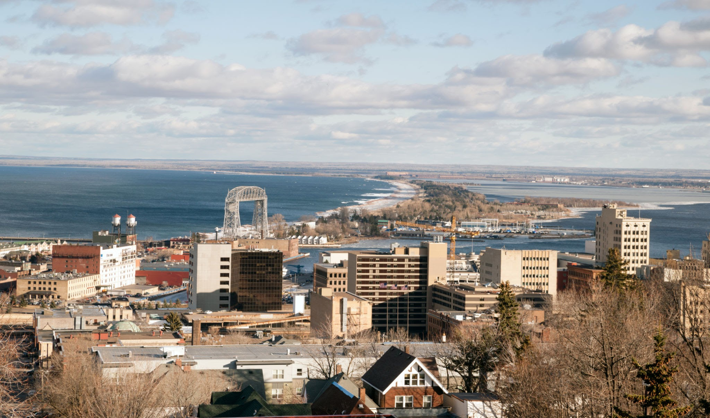

Get to know Duluth:
Duluth, Minnesota, situated on the shores of Lake Superior, boasts a captivating history reflecting the dynamic story of the Great Lake it overlooks. Originating as a fur trading post in the 17th century, Duluth metamorphosed into a thriving port during the 19th century's surge in timber and iron ore industries. Its strategic position at the westernmost tip of the Great Lakes rendered it pivotal for transportation. The iconic Aerial Lift Bridge, initially a transporter bridge, serves as an emblem of the city's industrial legacy. Today, Duluth seamlessly integrates its historical allure with contemporary amenities, drawing visitors with its maritime legacy, breathtaking landscapes, and a lively arts and culture scene.